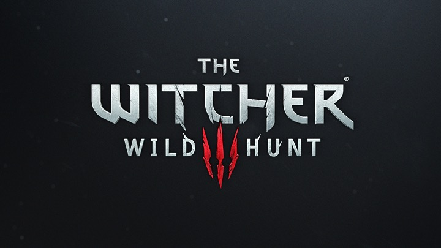
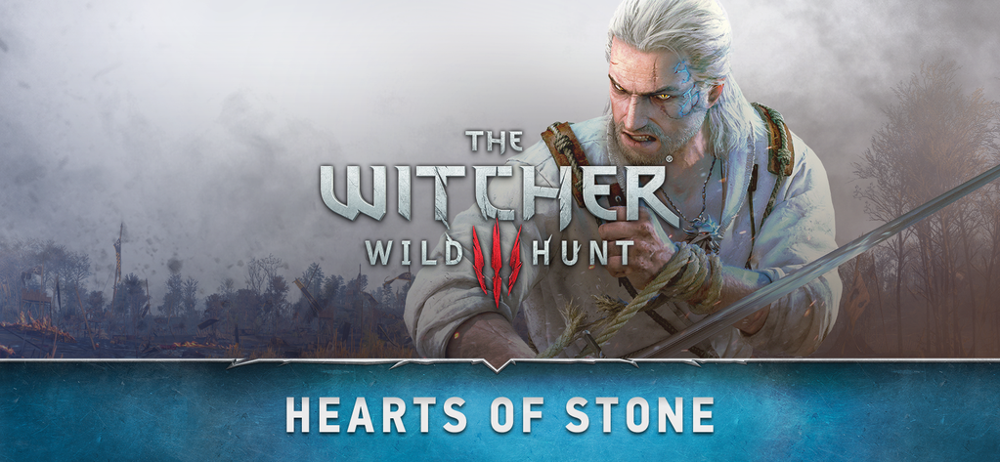

Çıkışı GTA V’i bitirdiğim zamanlara (19 Mayıs 2015) denk gelmesi bakımından, çıkar çıkmaz satın aldığım ve sakin sakin aylardır oynadığım Witcher 3 Wild Hunt’ı 2015’in Eylül ayı ortalarında bitirdim. Gerçi daha gidilmesi görülmesi gereken yerler var ama senaryo kısmı tamamlanmış oldu. Keşfedecek o kadar çok yer, tanışılması gereken o kadar çok NPC varki oyunu bitirmiş olmama karşın hala her yeri keşfetmeyi başaramadım.
Oyunun içinde beni eğlendiren çok şey var ama en önemlisi belki de Gwent oldu. Magic benzeri bir kart oyunu olan Gwent, Witcher 3 Wild Hunt’ın içine adapte edilmiş ayrı bir oyun gibi. Oyun boyunca çeşitli şekillerde kart destenizi tamamlamaya ve güçlendirmeye çalışıyorsunuz. Bazı kartlar senaryoların içine yedirilmiş, görevde eksik birşeyler yapmanız durumunda o kartı bir daha bulabilmek imkansız. Koleksiyon yapmayı sevenler ve takıntılı insanlar için çok can sıkıcı bir durum.😕
Oyunun dövüş sistemi çeşitli eleştiriler aldı. Ancak atlanan bir nokta var. İksirler ve Bestiary. Canavarlarla karşılaştıkça onlarla ilgili özellikler ve zayıf noktaları Bestiary’ye kaydediliyor. Nasıl dövüşülmesi gerektiği, nelerden kaçınılması gerektiği belirtiliyor. Elbette oyunun heyecanı içinde bu kısımlar okunmadan geçiliyor ancak takip edildiğinde faydalı bilgiler alabilmek mümkün.

Eklenti paketi Hearts of Stone’un en önemli özelliği Limited Edition kutulu sürümünde bulunan Gwent desteleri tabiki. Bu eklentide sadece Monsters ve Scoia’Tael desteleri yer alıyor, Şubat ayı içinde çıkacak Blood & Wine paketi büyük olasılıkla diğer iki desteyi içerecek.
GTA V yazımda⧉ belirttiğim gibi artık kitleler tarafından beğenilebilecek oyunlar yapabilmek için open world olması gerekliliğini bir kez daha gösteren bir oyun oldu. CD Projekt Red’in “Yılın Geliştiricisi” ödülünü kazanmasında en önemli etken bu belkide. Bununla birlikte oyunun fizik motoru pek çok bug içeriyor ve GTA V ile kıyaslandığında oldukça başarısız.